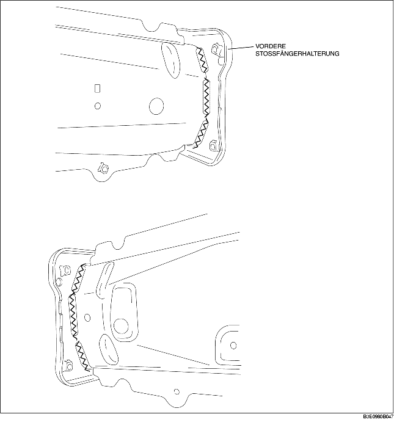

VORDERE STOSSFÄNGERHALTERUNG AUSBAUEN
B3E098053896B01
1. Die vordere Stößfängerhalterung ausbauen.
Achtung
• Nur das Verfahren für die linke Seite wird beschrieben. Die Form für die rechte Seite ist anders.
